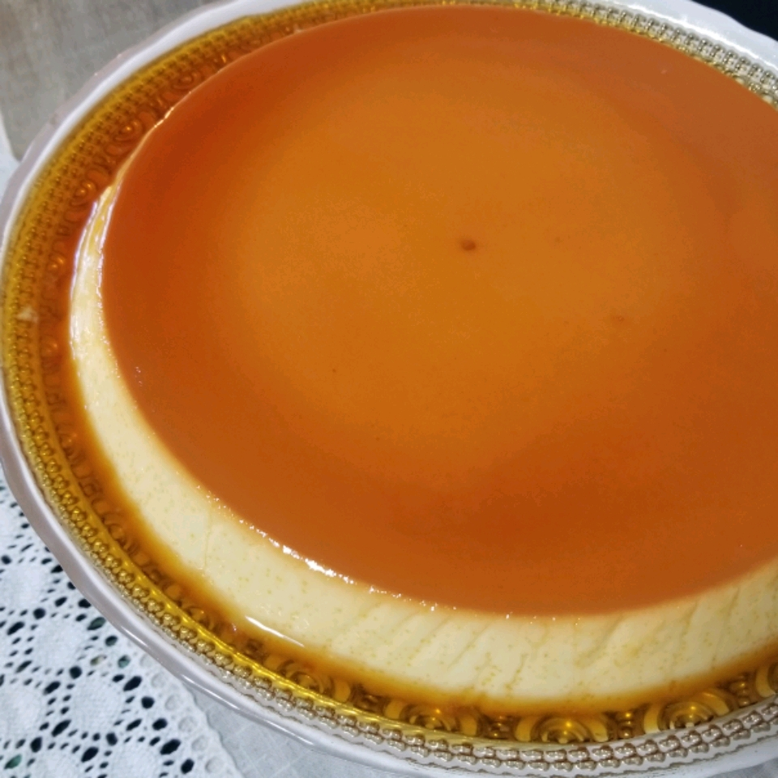

Creamy Caramel Flan

Creamy Caramel Flan Recipe
This recipe is a cross between egg custard and cheesecake. Rich and delicious.
Ingredients
- 3/4 cup white sugar
- 1 (8 ounce) package cream cheese, softened
- 5 eggs
- 1 (14 ounce) can sweetened condensed milk
- 1 (12 fluid ounce) can evaporated milk
- 1 teaspoon vanilla extract
Steps
- Preheat oven to 350 degrees F (175 degrees C).
- In a small, heavy saucepan over medium-low heat, cook sugar, stirring, until golden. Pour into a 10 inch round baking dish, tilting to coat bottom and sides. Set aside.
- In a large bowl, beat cream cheese until smooth. Beat in eggs, one at a time, until well incorporated. Beat in condensed and evaporated milk and vanilla until smooth. Pour into caramel coated pan. Line a roasting pan with a damp kitchen towel. Place baking dish on towel, inside roasting pan, and place roasting pan on oven rack. Fill roasting pan with boiling water to reach halfway up the sides of the baking dish.
- Bake in preheated oven 50 to 60 minutes, until center is just set. Cool one hour on wire rack, then chill in refrigerator 8 hours or overnight. To unmold, run a knife around edges of pan and invert on a rimmed serving platter.